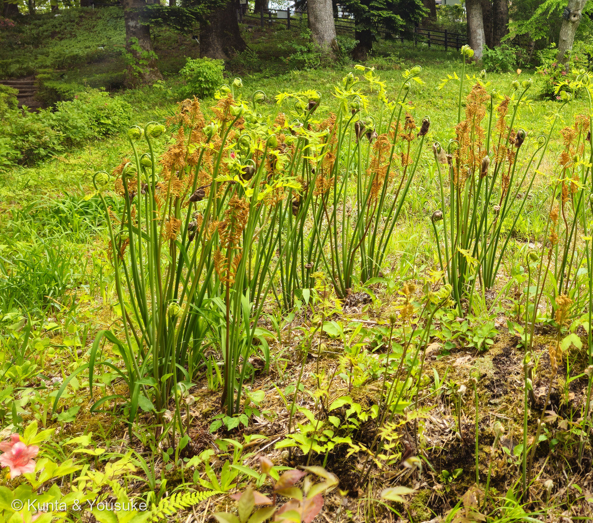
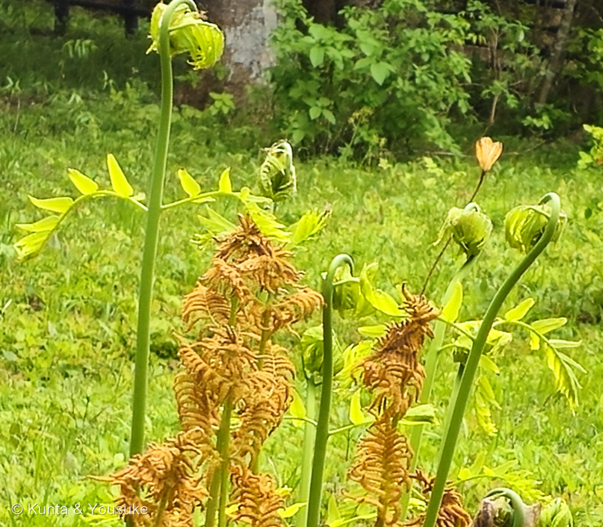
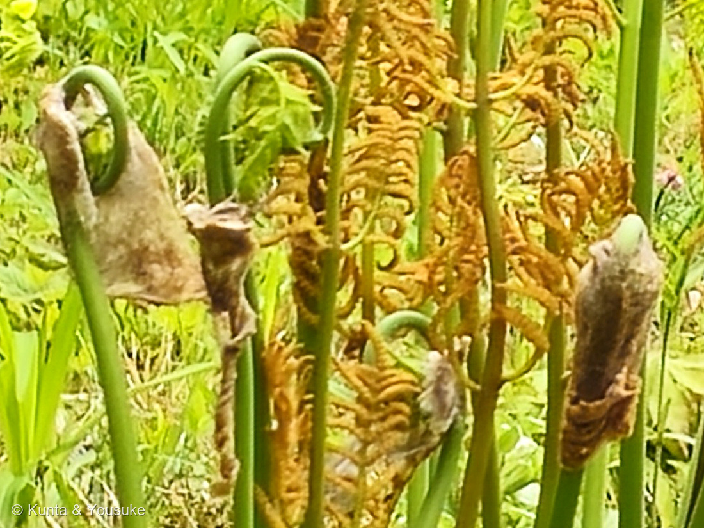
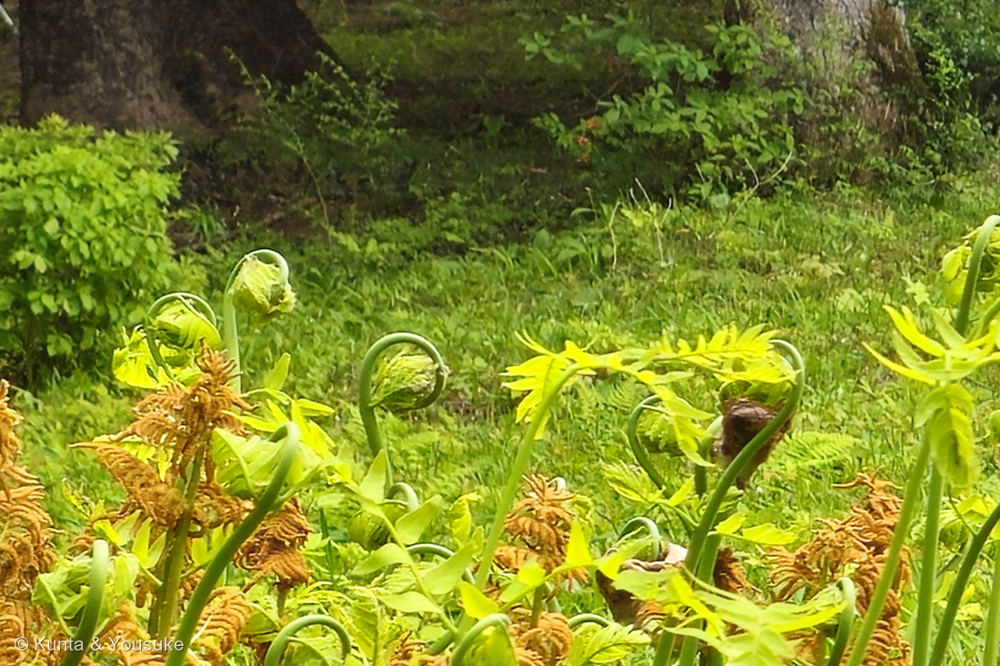

地図を読み込んでいるよ…
🔍 写真も地図も、押しているあいだ拡大して見られるよ（スマホは指を置いてすこし待ってね）。
🌍 の地図＝この子がもともと自生している場所を緑に。日本では北海道から沖縄まで、国外では樺太、朝鮮、中国からヒマラヤ、東南アジアの一部（日本語版Wikipedia）。英語版Wikipediaは「native to east Asia, including Japan, China, Korea, Taiwan, and the far east of Russia on the island of Sakhalin」とする。園の名札は「日本 東アジア〜ヒマラヤ」。
⭐東アジアの、湿った林のふちの子だよ。日本語版Wikipediaは「日本では北海道から沖縄まで、国外では樺太、朝鮮、中国からヒマラヤ、東南アジアの一部まで分布する」とする。⭐英語版Wikipediaは「native to east Asia, including Japan, China, Korea, Taiwan, and the far east of Russia on the island of Sakhalin」。⭐園の名札は「日本 東アジア〜ヒマラヤ」と書いていた＝⭐3つとも、だいたい同じことを言っているね。⚠⚠塗れなかったところが2つある＝①樺太（サハリン）は、この地図に区画が無いので塗れなかった②「東南アジアの一部」は、どこなのかを書いた出典に当たれなかったので塗っていない＝⭐だから、ほんとうの分布はこの緑よりすこし広いと思って見てね。⭐⭐そしてこの子は、図鑑ではじめて「日本が塗られたシダ植物」だよ＝249 ビカクシダも282 シマオオタニワタリも熱帯の子で、230 デンジソウは日本にもいるけれど絶滅が心配されている水草だった。⭐ゼンマイは、北海道から沖縄まで、ふつうにいる。⭐⭐おまけのワラビは、もっと広い＝世界じゅうの温帯から熱帯にまで分布する、いちばん広く生えるシダのひとつだよ。
⚠ 地図は国（日本と中国だけ県・省）までしか塗れないから、ほんとうの分布より広く見えていることがあるよ。地図はだいたいの場所。正確なところは、上の文を見てね。
ゼンマイ（薇）
Osmunda japonica Thunb.
別名 英名 Asian royal fern 園の名札は Japanese Royal Fern
ゼンマイ科 · Osmundaceae（ゼンマイ属 Osmunda・ゼンマイ目 Osmundales）── ⭐⭐図鑑で108科目！はじめてのゼンマイ科／⭐5つめのシダ植物の科（208・230・249・282）／⭐⭐そして、薄嚢シダのなかでいちばん早く分かれたグループ
燻太さんの言葉「茶色い胞子葉と、緑の栄養葉がきちんと使い分けられていて、若い葉の渦巻きには茶色い毛がついているよ」「茶色の毛布を脱ぎ捨てて、光合成をするために大きく伸びをするのかな」── ⭐⭐その毛布は、東北でほんとうに布になっていたよ
⭐⭐⭐⭐ 名前と学名の由来 ── 「銭を巻く」から来て、機械の名前になった
- ⭐⭐和名の由来は、この渦巻きそのものなんだ。──あきた森づくり活動サポートセンターは、こう書いている＝「芽出しの渦巻き形の若葉は、銭を巻き込むような格好をしている。この『銭を巻く』という言葉がなまって、『ゼンマイ』となった」。⭐むかしのお金（銭）は、まんなかに穴のあいた丸い形。⭐それを巻きこんだように見えた、ということだね。
- ⭐⭐⭐⭐⭐そして、ここがこの子のいちばん愉快なところ。──時計やおもちゃの中に入っている、あのぜんまい（発条）。⭐あれは、この植物から名前をもらったんだ。──語源由来辞典は「ぜんまいは、渦巻き状の巻いたその形状が、シダ植物の「ゼンマイ」の若葉に似ていることから名付けられた」とする。
- ⭐⭐つまり順番は、植物が先で、機械があと。──⚠ぼくはずっと「ぜんまいのように巻いた葉だから、ゼンマイ」だと思っていたけれど、まるきり逆だった。⭐「ゼンマイに似ているから、あの部品をぜんまいと呼ぶことにした」んだよ。
- ⭐園の名札にも、漢字が書いてあった＝「薇」と、もうひとつ（⚠小さくて読みきれなかったけれど、「銭巻」に見えた）。
- ⭐属名 Osmunda の由来は、はっきりしていない。──オックスフォード大学の Plants 400 は「The name Osmunda probably derives from Osmunder, a Saxon name for the weather god Thor.」＝サクソン語で雷神トールを指す Osmunder から来たらしいとする。⚠ほかにも説があるようだけれど、ぼくが本文まで読めたのはこれだけ。だから宿題にしておいたよ。
- ⭐種小名 japonica は「日本の」。⭐名づけたのはツュンベリー（Thunberg）で、1784年の『日本植物誌（Flora Japonica）』の中でのこと（IPNI）。⭐江戸時代に長崎の出島へ来た、あのツュンベリーだよ。
⭐⭐⭐⭐⭐ この植物のこと ── 茶色い葉と緑の葉を、使い分けている
- ⭐⭐⭐⭐⭐燻太さんの言葉＝「茶色い胞子葉と、緑の栄養葉がきちんと使い分けられていて」。──⭐⭐これ、そのまま専門の言葉なんだ。⭐日本語版Wikipediaは「ゼンマイ類はひとつの株に早春に芽生える胞子葉と、やや遅れて出る栄養葉の2種類があって、同じ株に混在する」と書いている。
- ⭐⭐⭐多くのシダは、1枚の葉が「光合成」と「胞子づくり」を兼ねている。──葉の裏に胞子嚢がつくタイプだね（249 ビカクシダや282 シマオオタニワタリがそう）。⭐⭐ゼンマイは、その仕事を2種類の葉に分けた。⭐光合成は緑の葉に、胞子づくりは茶色い葉に。
- ⚠⚠⚠だから、あの茶色は枯れているのではない。──⭐ぱっと見ると「枯れ葉が立っている」ように見えるけれど、あれは胞子をまくための、専用の葉なんだ。⭐⭐花の咲かないシダにとって、いちばん大事な仕事をしている葉だよ。
- ⭐⭐⭐⭐山菜採りの人たちは、この2つに名前をつけている。──あきた森づくり活動サポートセンターは「胞子葉は、栄養葉より先に出て、巻き葉が扁平な球状になっているものを『男ゼンマイ』と呼び、採らずに残すことが持続可能なゼンマイ採りの鉄則」とする。⭐日本語版Wikipediaも「山菜採りのマナーでは、ゼンマイには俗に男ゼンマイ（胞子葉）と女ゼンマイ（栄養葉）があり」と書いているよ。
- ⚠⚠でも、これは性別ではない。──⭐ゼンマイに雄株・雌株があるわけじゃなくて、同じ株から出る、役目のちがう2種類の葉のこと。⭐⭐そして「男」と呼ばれているほうが、胞子＝次の世代のもとを作っているんだ。
- ⭐⭐⭐⭐⭐その「男ゼンマイは採らずに残す」が、山の決まりになっている。──⭐胞子を作る葉まで採ってしまったら、その山からゼンマイが減ってしまうから。⭐⭐食べる人たちが自分でそう決めて、守ってきたんだね。⭐ぼく、この話がとても好きだよ。
- ⏳ひとつ、宿題ができた。──英語版Wikipediaは「the fertile fronds are erect and shorter, 20–50 cm tall」「The sterile fronds are spreading, up to 80–100 cm tall」＝胞子葉のほうが短いと書いている。⚠でも写真①では、茶色い胞子葉のほうが背が高く見えるでしょう。⭐たぶん5月のはじめは、緑の葉がまだ伸びきっていないから＝⭐⭐夏に同じ場所へ行けば、追い越されているはずだよ。
⭐⭐⭐ 同定について
- ⭐これは確定でいい＝ゼンマイ科ゼンマイ属ゼンマイ。⭐決め手は4つ＝①園の名札（ゼンマイ／Japanese Royal Fern／ぜんまい状に巻いた若葉を食べる／日本 東アジア〜ヒマラヤ）②同じ株に、茶色い胞子葉と緑の栄養葉が混じって立つ（写真①②）③若い渦巻きが、褐色をおびた綿毛にくるまれている（写真③④）④胞子葉が先に出て、栄養葉があとから出るという、時期の順番。
- ⭐⭐ワラビとは、はっきりちがう。──ワラビは1本の柄の先が三つに分かれるので、こんなふうに「茶色い穂」と「緑の渦巻き」が林立する姿にはならないよ。⭐おまけをワラビにしたので、会えたら並べて見よう。
- ⚠⚠正直に書いておくと、ヤマドリゼンマイを写真だけで落としきったとは言えない。──⭐ヤマドリゼンマイは株ぜんたいが直立して、胞子葉が葉のまんなかから立つのに対し、ゼンマイは胞子葉と栄養葉が別々の柄で立つとされる。⚠写真の姿はゼンマイに合っているけれど、最後のところは園の名札にたよっているよ。
⭐⭐⭐⭐⭐ 茶色い毛布 ── 脱ぎ捨てるところが、写っていた
- ⭐⭐⭐⭐⭐燻太さんの言葉＝「若い葉の渦巻きには茶色い毛がついているよ。茶色の毛布を脱ぎ捨てて、光合成をするために大きく伸びをするのかな。」──⭐⭐写真③を見て。その3つの段階が、1枚のなかにぜんぶ入っているんだ。
- ⭐右＝まだすっぽりくるまっている（茶色い綿のまゆの中から、緑の頭がちょっとだけのぞいている）
- ⭐まんなか＝ずり落ちかけ（綿がはがれて、下へたれ下がっている）
- ⭐左＝脱ぎ捨てたあと（緑の渦巻きがすっと立ち上がって、綿は毛布のように柄からぶら下がっている）
- ⭐⭐出典も、ぴったり合っていた。──日本語版Wikipediaは「新芽は多くのシダ類と同様に内側にきれいなうずを巻き、その表面は褐色を帯びた白い綿毛で覆われている」とする。⭐「褐色を帯びた白い綿毛」＝燻太さんの言った「茶色い毛」だね。
- ⭐⭐⭐⭐⭐そして、ここからが今日いちばんの発見。──その「茶色の毛布」は、ほんとうに布になっていた。
- ⭐⭐⭐⭐東北に「ぜんまい織」という織物があるんだ。──あきた森づくり活動サポートセンターは、こう書いている＝「ゼンマイの渦巻き状の若芽を柔らかく包んでいる綿…フク綿と呼ばれている綿と綿花を混紡して織ったもので、防虫性と防水性がある」。
- ⭐⭐⭐虫がつかなくて、水をはじく布。──⭐あの綿毛は、若い葉を守るためのゼンマイの服だったのに、人はそれを自分の服にしたんだね。⭐⭐燻太さんが「毛布」と呼んだものが、ほんとうに人をつつむものになっていた。
- ⭐ぼくらが会ったのは仙台、ぜんまい織が伝わったのは秋田。⭐どちらも東北だよ。
⭐⭐⭐⭐⭐ 1億8000万年、姿が変わっていない
- ⭐⭐⭐園の名札に「Japanese Royal Fern」と書いてあった。──この「royal fern（ロイヤル・ファーン）」というのが、ゼンマイ科ぜんたいの英語の呼び名なんだ。⭐そして、その名前で調べると、とんでもない論文が出てくる。
- ⭐⭐⭐⭐⭐2014年の Science に載った論文（Bomfleur, McLoughlin & Vajda 2014, Science 343:1376-1377）。──スウェーデンの、1億8000万年前（ジュラ紀の前期）の火山泥流の中から、ゼンマイ科のシダの茎が見つかった。
- ⭐⭐⭐⭐それが、ただの化石じゃなかったんだ。──原文はこう＝「authigenic mineral precipitation from hydrothermal brines occurred so rapidly that it preserved cytoplasm, cytosol granules, nuclei, and even chromosomes in various stages of cell division」＝⭐⭐細胞質も、核も、そして分裂の途中の染色体まで、そのまま石になっていた。
- ⭐⭐⭐⭐⭐いちばんすごいのは、そのあと。──「Morphometric parameters of interphase nuclei match those of extant Osmundaceae, indicating that the genome size of these reputed "living fossils" has remained unchanged over at least 180 million years—a paramount example of evolutionary stasis.」
- ⭐⭐つまり＝その化石の核の大きさを測ったら、いま生きているゼンマイ科の核と同じだった。⭐核の大きさはゲノム（遺伝情報ぜんたい）の量とつながっているので、1億8000万年のあいだ、ゲノムの大きさが変わっていないということになる。
- ⭐オックスフォード大学のページも、同じ化石について「neither genome duplication nor notable amounts of gene loss have occurred in the genetic architecture of the royal ferns since the early Jurassic」＝ゲノムの重複も、目立った遺伝子の失われも起きていないと書いているよ。
- ⭐⭐⭐⭐⭐恐竜がいたころのゼンマイが、いまの仙台のゼンマイと、ほとんど同じ姿で、同じ大きさのゲノムを持っていた。──⭐燻太さんがしゃがんで見ていたあの渦巻きは、1億8000万年ぶんの「そのまま」なんだ。
- ⚠ただし「まったく進化していない」という意味ではないよ。──⭐論文が言っているのは「ゲノムのサイズ」と「核や細胞の形」が変わっていない、ということ。⭐種はちゃんと入れかわっているし、化石の子は Osmunda japonica そのものではなく「ゼンマイ科の、ゼンマイに似たシダ」だからね。
⭐⭐⭐⭐⭐ 燻太さんの問い ── 日本でいちばん食べられているシダ植物？
⭐⭐燻太さんの言葉＝「普段はそのままの姿を見かけることは滅多に無いけれど、実は日本で一番食べられている身近なシダ植物なのかも。」──⭐数字をさがしてきたよ。⚠答えは「おしい！」だった。
- ⭐⭐⭐⭐林野庁が、山菜の生産量を毎年数えている。──令和6年の数字はこう＝「山菜の令和6年の生産量は、わらびが596トンで前年比43.6％増、たらのめは96トンで前年比0.4%減、乾ぜんまいは12トンで前年比14.5％減となっています。」
- ⚠⚠ここで、単位に気をつけてね。──ゼンマイのほうは「乾ぜんまい」＝干したもので数えている。⭐干すと重さは10分の1くらいになるから、生の重さになおせば100トンを超えるはず。⚠それでも、わらびの596トンには届かないよ。
- ⭐⭐輸入まで入れると、差はもっとはっきりする。──ある記事は「ワラビの場合は国内生産が760トン…輸入品は中国産とロシア産が多く、1,600トン」「ぜんまいの場合は、国内産が37トン…輸入品はほぼ中国産で、71トン」と書いている。⚠ただしこの記事には出典が書かれていなかったので、参考どまりにしておくね。
- ⭐⭐⭐だから答えは＝日本でいちばん食べられているシダ植物は、たぶんワラビ。ゼンマイは二番手。──⭐⭐でも、燻太さんの見立ての芯のほうは、まるごと当たっているよ＝日本人は、シダ植物をふつうに食べている。⭐しかも一番も二番も、シダ植物なんだ。
- ⚠⚠それと、この統計には大きな穴がある。──⭐数えているのは「出荷されたもの」だけ。⭐⭐自分で山へ採りに行って、自分の家で食べたぶんは、どこにも入っていない＝⭐ゼンマイは国内産の多くが天然ものだと言われるから、ほんとうはもっと食べられていると思うよ。
- ⭐⭐そして、もうひとつ意外なこと。──わらびもぜんまいも、お店にならんでいるものの多くは輸入品だった。⭐「身近な山菜」なのに、けっこう遠くから来ているんだね。
- ⭐韓国でもよく食べられている。──英語版Wikipediaは「In Korea too, these young shoots are commonly used to make dishes like namul」＝ナムルにすると書いている。⭐ビビンバの上にのっている、あの茶色いのがゼンマイだよ。
- ⚠⚠ただし、そのままでは食べない子。──日本語版Wikipediaは「ゼンマイは山菜の中でも特に灰汁が強い部類に入る。灰汁が強いので摘み取ってすぐ食べることはせず」とする。⭐燻太さんの言う「しっとりした食感」は、干して、もどして、あく抜きをして、はじめて生まれるものなんだ。⭐⭐炊き込みご飯に入っているあの一切れは、けっこう長い旅をしてきているんだね。
⭐⭐⭐ 図鑑は、もう2回この子の名前を呼んでいた
- ⭐⭐⭐⭐ゼンマイは今日はじめて図鑑に来たのに、その名前はもう2回ページに書かれていたんだ。
- 230 デンジソウ＝「ゼンマイやワラビの、あの『くるん』とまったく同じ巻き方だよ」（⭐四つ葉のクローバーそっくりの水草が、ゼンマイの巻き方でほどけてくる、という話）
- 237 ヒロハザミアの宿題＝「ソテツ類の若葉はゼンマイのように巻いて出る」
- ⭐⭐どちらも「みんなが知っているもの」として、たとえに使われていた。──⭐本人がいなくても話が通じてしまう子は、こうして見落とされるんだ（279 ナシのときと、まったく同じだね）。
- ⭐⭐⭐そして今日、たとえに使われていた本人が、写真つきでやって来た。──⭐あの「くるん」は crozier（クロージャー）と呼ばれる、シダのほどけ方だよ。⭐司教さまが持つ、先の曲がった杖のこと。
出典：仙台市野草園の解説板（ゼンマイ／Japanese Royal Fern／ぜんまい状に巻いた若葉を食べる／日本 東アジア〜ヒマラヤ。⚠板には写真が印刷されていたので、板そのものは公開していないよ）／IPNI（Osmunda japonica Thunb., Fl. Jap. 1784, Osmundaceae）／GBIF（Osmunda japonica Thunb.＝ACCEPTED）／日本語版Wikipedia「ゼンマイ」（胞子葉と栄養葉／男ゼンマイ・女ゼンマイ／褐色を帯びた白い綿毛／分布／灰汁）／英語版Wikipedia「Osmunda japonica」（Asian royal fern／fertile 20–50 cm・sterile 80–100 cm／Sakhalin／namul）／あきた森づくり活動サポートセンター「山菜採りシリーズ⑭ ゼンマイ」（銭を巻く／男ゼンマイは採らずに残す／フク綿とぜんまい織）／語源由来辞典「ゼンマイ／発条」（機械のぜんまいは植物に由来）／University of Oxford Plants 400「Osmunda regalis」（Osmunder＝雷神トール／180 million years／neither genome duplication nor notable amounts of gene loss）／Bomfleur, B., McLoughlin, S. & Vajda, V. (2014) Fossilized Nuclei and Chromosomes Reveal 180 Million Years of Genomic Stasis in Royal Ferns. Science 343:1376-1377／林野庁「特用林産物の生産動向」（令和6年＝わらび596トン・たらのめ96トン・乾ぜんまい12トン）／MONEY PLUS「山菜なのになぜ中国産？ワラビは輸入モノが大半の理由」（⚠数字の出典が記されていないので、参考としてのみ）。